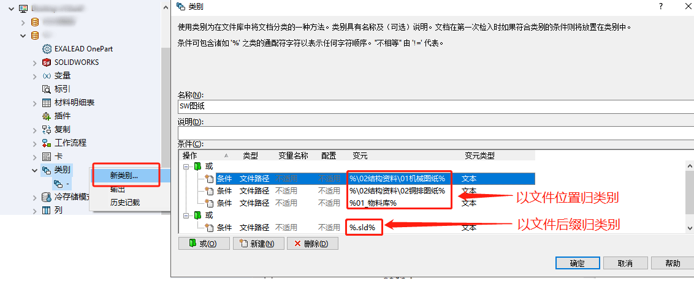
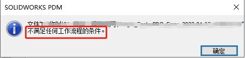

SOLIDWORKS-PDM类别
新建类别
【PDM管理-右键类别-新类别】，在新建窗口输入“类别名称”和“条件”即可。
输入条件
“或”是新建一个或条件集合；“新建”新建条件
可以按特定路径进行分类
1 | xxx\% ：匹配根目录下名为“administration”的文件夹内的所有文件 |
可以按特定文件名称或扩展名进行分类
1 | %.pdf ：匹配文件库内的所有“.pdf”文件 |
条件类型
- 对象类型
- 修订版
- 变量
检入时会需要进行类别分类，未按要求归类的文件是检入不进 PDM系统的（如下提示：）
